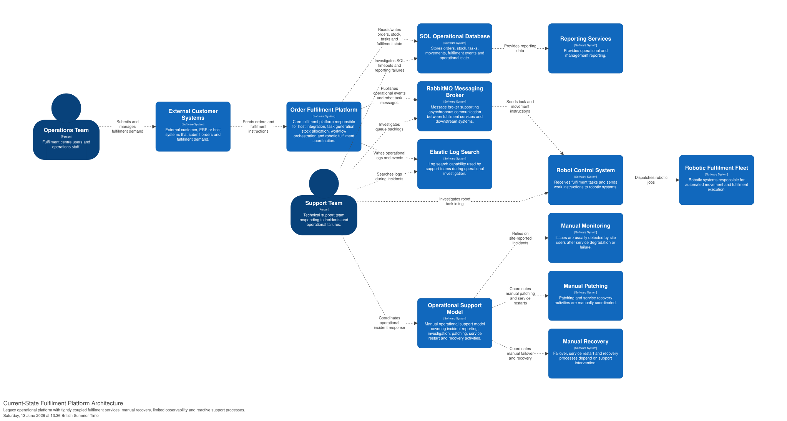

Current-state architecture for a legacy enterprise fulfilment environment with tightly coupled systems, manual recovery processes, limited observability, and reactive operational support.
This diagram shows the current operational platform flow from external customer systems through the fulfilment platform, database, messaging layer, robot control system, robotic fleet, reporting, log search, and manual support model.

The diagram is intentionally modelled as a current-state view rather than an ideal architecture. It highlights the operational reality: critical fulfilment workflows depend on tightly coupled systems, manual recovery, fragmented investigation paths, and site-reported incidents.
These pain points map directly to the architecture layers affected by current operational instability.
Affected Layer: SQL Operational Database
Reporting failures, slow transactions and operational delays.
Affected Layer: Messaging Layer
Delayed communication between fulfilment services and robotics.
Affected Layer: Order Fulfilment Platform
Order processing interruptions and fulfilment delays.
Affected Layer: Platform & Database Infrastructure
Server degradation, service instability and emergency operational intervention.
Affected Layer: Robot Control System
Network and application communication failures impacting fulfilment throughput.
Affected Layer: Operational Support Model
Issues are identified by site personnel after failure occurs.
Affected Layer: Operational Support Model
Recovery activities rely heavily on manual intervention and individual knowledge.
Affected Layer: Release & Change Management
Production fixes are manually coordinated, increasing validation and rollback risk.
Affected Layer: Release & Change Management
Hotfix deployment, validation and rollback activities are not handled through a clear automated pipeline.
Fulfilment disruption can delay order picking, shipping preparation, and customer delivery timelines.
Database, messaging, robotic control, and network issues can reduce the volume of orders processed.
Manual recovery and unclear failover processes extend service disruption during high-severity incidents.
Support teams spend significant time investigating recurring issues rather than improving platform resilience.
Limited observability, fragmented logs, and knowledge silos slow down root cause analysis.
Scalability constraints, database bottlenecks, and manual processes increase risk during high-volume periods.
The current architecture supports fulfilment operations, but its resilience and operational maturity are limited by legacy infrastructure, manual recovery processes, reactive support, and limited monitoring.
Introduce centralised monitoring, alerting, dashboards, log correlation, and operational intelligence.
Reduce manual failover dependency with better backup, recovery, availability, and disaster recovery design.
Move toward scalable cloud infrastructure with improved capacity management and reduced server maintenance overhead.
Use AI to retrieve knowledge, correlate incidents, summarise logs, suggest runbooks, and support faster investigations.